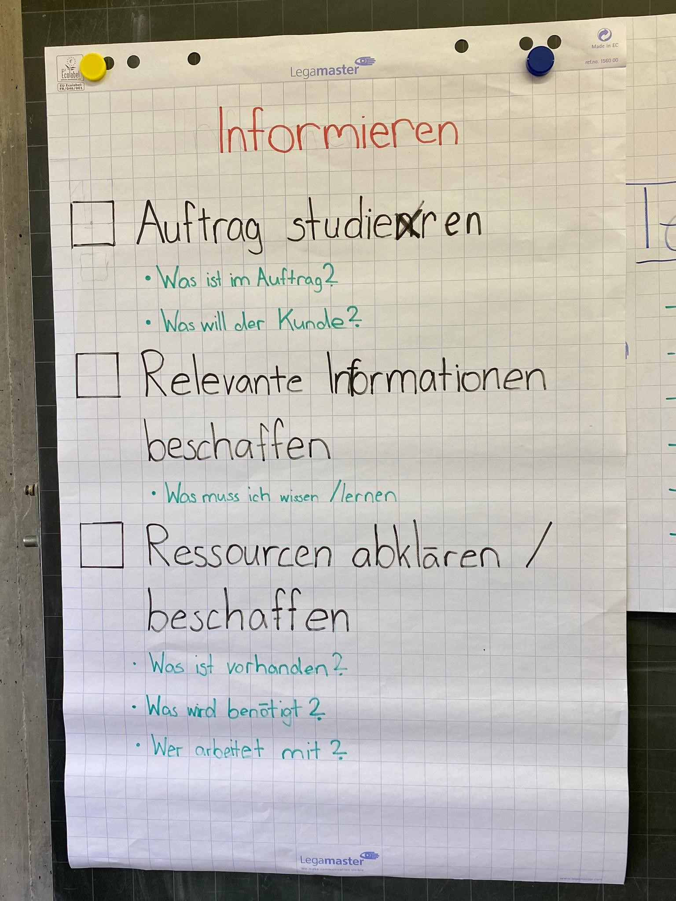
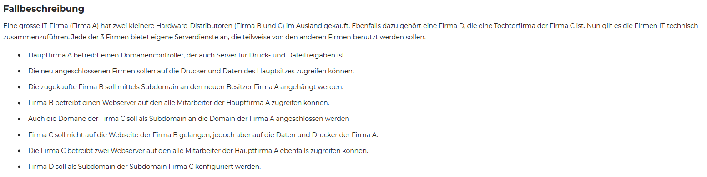
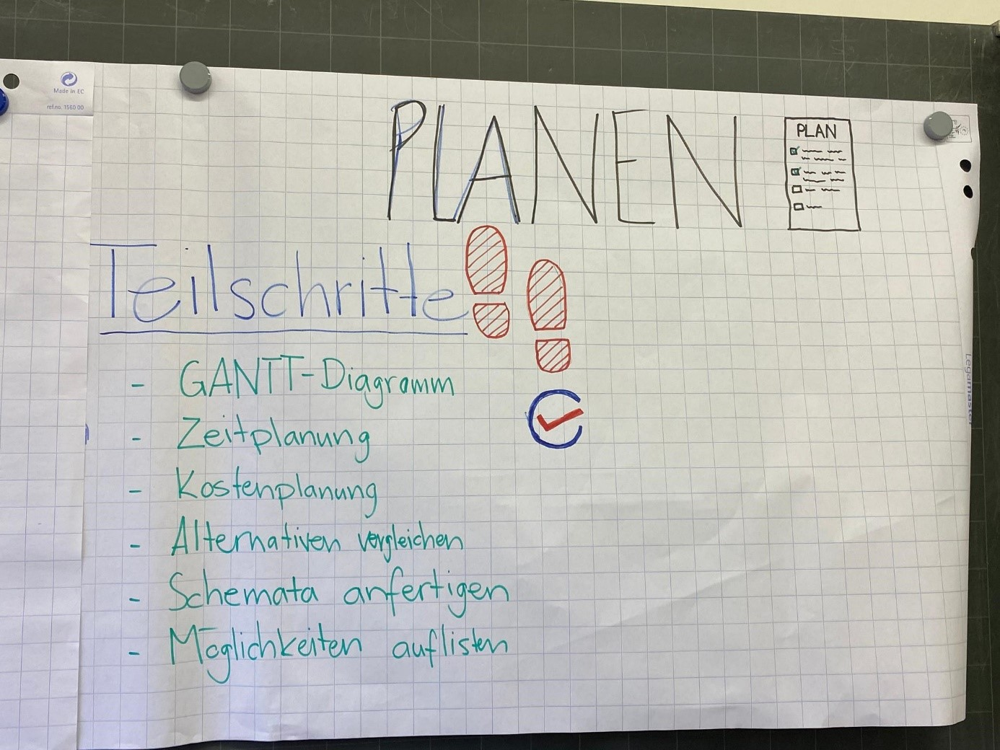
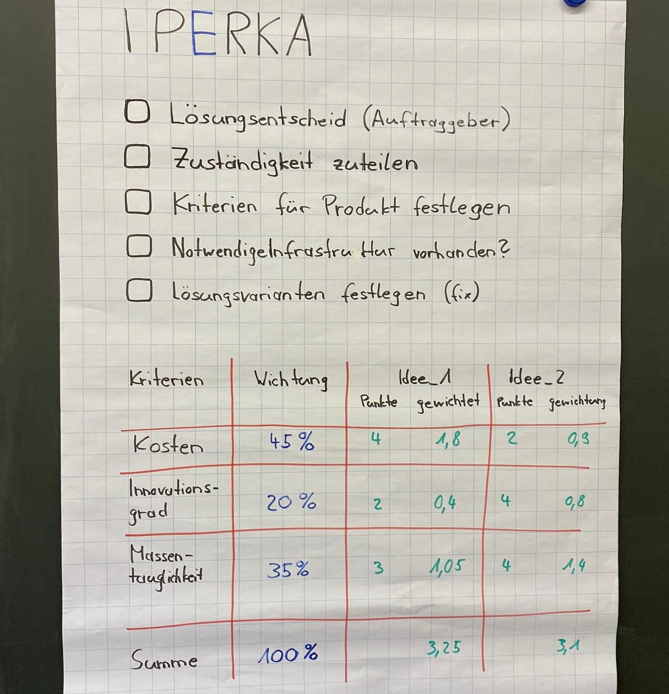
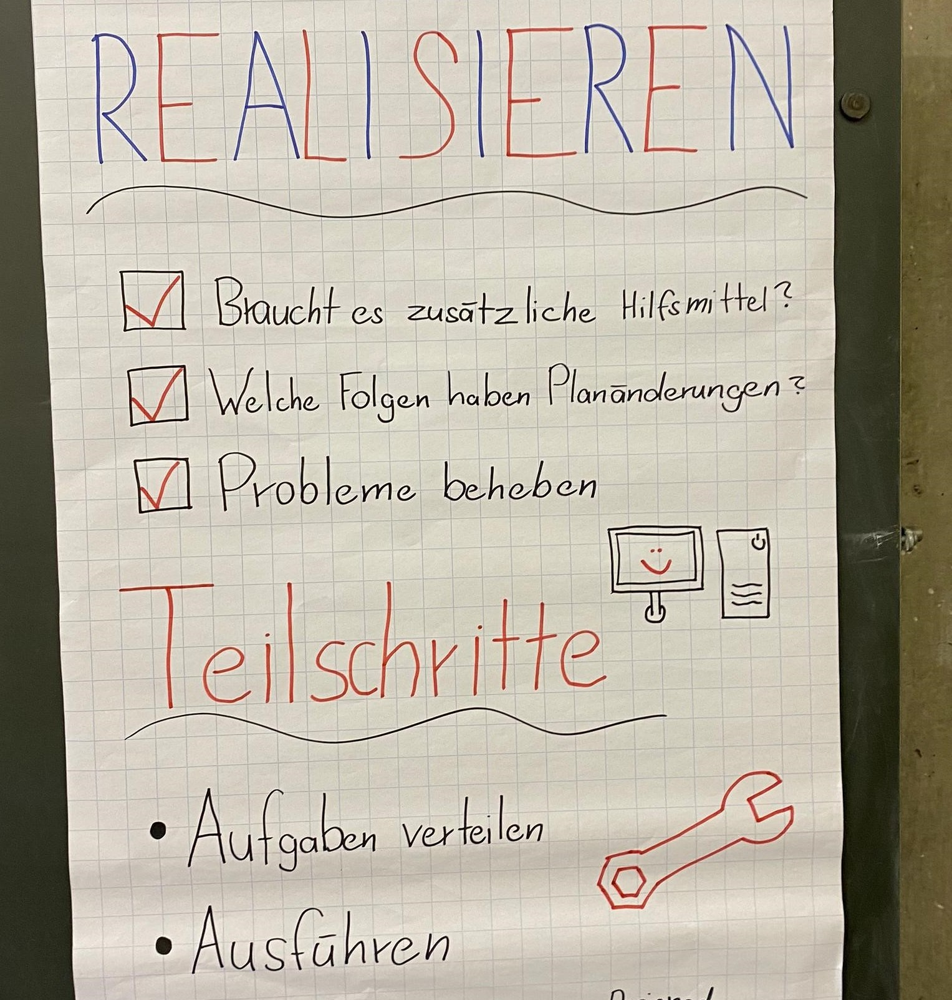
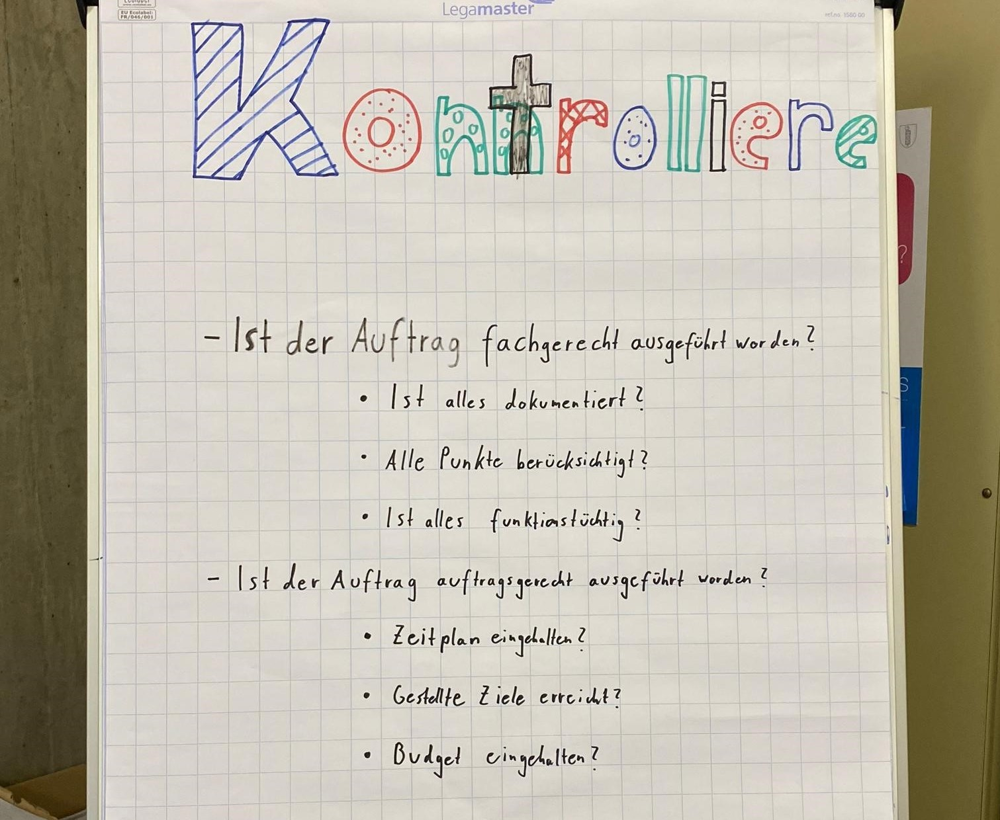
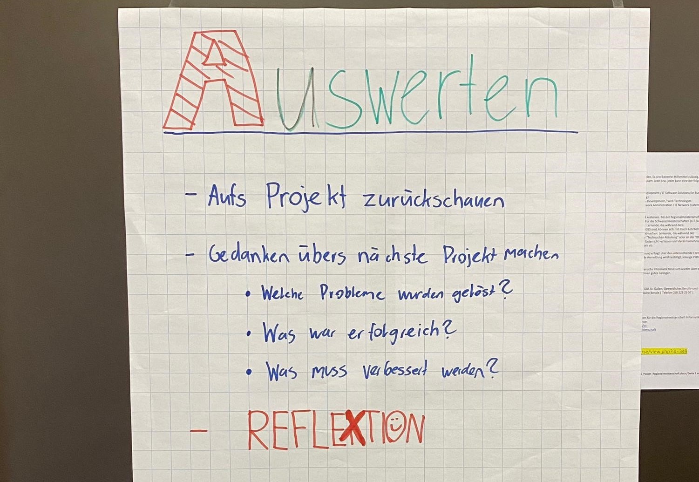

Mit IPERKA Praktische Beispiele

I - Informieren
1. Ein Beispiel für Informieren ist, als wir uns mit dem TeamViewer auseinandergesetzt haben. Wir mussten uns informieren, was die Voraussetzungen für eine Installation von TeamViewer sind und was für Funktionen dieses Programm bietet.2. Als Gruppe mussten wir eine Active Directory-Gesamtstruktur erstellen. Als erster Schritt musste die Aufgabe durchgelesen und dann in der Gruppe miteinander besprochen werden. Es sollte die Frage beantwortet werden, was für das Projekt alles gemacht werden muss.

Meine Erfahrung und Erkenntnis aus dem Schritt Informieren
Für die Planung ist der Teil des Informierens sehr wichtig, damit am Schluss, nichts vergessen wird. Das Informieren beansprucht immer sehr viel Zeit und man muss sich mit dem Thema auseinandersetzen.
 P - Planen
1. Es musste geplant werden, wie wir den TeamViewer präsentieren können und wer welchen Teil dafür übernimmt. Dann mussten wir in der Planung entscheiden, was wir vorzeigen würden, was aber auch relevant und interessant ist.
2. Als nächsten Schritt haben wir die gesamte Struktur auf einem Plakat aufgezeichnet und entschieden, wer welche Firma übernimmt.
Meine Erfahrung und Erkenntnis aus dem Schritt Planen
Beim Planen sollte am besten eine Zeichnung erstellt werden, oder ein Plan, damit der Auftrag auch grafisch dargestellt ist. Die zeitliche Planung stellt man am Besten mit einen Gantt-Diagramm dar.
 E - Entscheiden
1. Wir haben uns dann entschieden, wer welche Rolle übernimmt und was bei der Präsentation gezeigt wird.
2. Ausserdem mussten wir in der Gruppe entscheiden, wer die Projektleitung innerhalb der Gruppe übernimmt und das Team dann koordiniert. Danach besprachen wir wie wir am besten vorgehen, um das Ziel zu erreichen.
Meine Erfahrung und Erkenntnis aus dem Schritt Entscheiden
Beim Entscheiden sollte man sich für die beste Idee entscheiden. Am besten geht dies mit Hilfe einer Nutzwertanalyse. So kann aufgezeigt werden, was die beste Idee ist, um nicht zu einem späteren Zeitpunkt noch zu einem anderen Weg wechseln.
 R- Realisieren
1. Jetzt musste die Präsentation erstellt und Bilder hinzugefügt werden. Es sollte auch ein praktisches Beispiel, bei dem TeamViewer in Aktion gesehen wird, realisiert werden.
2. Nun wurde die Aufgabe als Gruppe miteinander realisiert. Jeder hatte seine Rolle und der Projektleiter sagte, was zu tun ist.
Meine Erfahrung und Erkenntnis aus dem Schritt Realisieren
Bei der Realisierung ist es wichtig, auf die geschriebene Dokumentation zu achten, damit wichtige Details nicht vergessen gehen. Es sollte als Gruppe alles miteinander besprochen werden, so dass jeder auf dem gleichen Stand ist.
 K - Kontrollieren
1. Die Präsentation sollte gut aussehen und keine Fehler mehr enthalten. Die Personen sollten für die Präsentation gut vorbereitet sein.
2. Zum Testen, ob alles funktioniert, wurde in der Dokumentation eingetragen, was alles getestet wurde und ob die Anforderungen erfüllt wurden.
Meine Erfahrung und Erkenntnis aus dem Schritt Kontrollieren
Bei der Kontrolle sollte dokumentiert werden, was alles getestet wurde, oder wo es Verbesserungs- Potenzial gibt. Die Methode wird meistens eher weniger beachtet, da das Projekt auf gewisse Weise bereits zu Ende ist.
 A - Auswerten
1. Nach der Präsentation schauen, wie sie verlief und was beim nächsten Mal verbessert werden kann.
2. Der Auftrag war am Schluss korrekt und wir hatten sogar noch etwas Zeit, da wir als Gruppe schnell waren. Es sollte das nächste Mal mehr miteinander besprochen werden, so dass allen in der Gruppe klar ist, was genau die andere Person macht. Es gab ein paar Probleme bei der Verbindung zwischen der Firma C und der Hauptfirma. Bei der Firma A, die auf die beiden Webserver von Firma C zugreifen sollte, gab es ebenfalls ein Problem, aber dies wurde dann auch relativ schnell gelöst.
Meine Erfahrung und Erkenntnis aus dem Schritt Auswerten
Bei der Aufwertung sollte drauf geachtet werden, wo die Fehler waren und wie man sich beim nächsten Mal verbessern könnte. Dies sollte ebenfalls in der Dokumentation notiert werden, was meistens ein wenig in Vergessenheit gerät.
Welche IPERKA Schritte fur mich am schwierigstens sind und welche Schritte ich mehr beachten werde
Am Schwierigsten finde ich das Informieren, da später mit Unwissenheit ein Problem ausgelöst werden kann. In diesen Beispielen hatte ich zum Glück keine Probleme, bei denen es sich zu grossen Problemen entwickelt hat. Bei der Kontrolle des Active Directory sollte genau dokumentiert werden, ob alles funktioniert, da es in der Dokumentation zu wenig beachtet wurde.